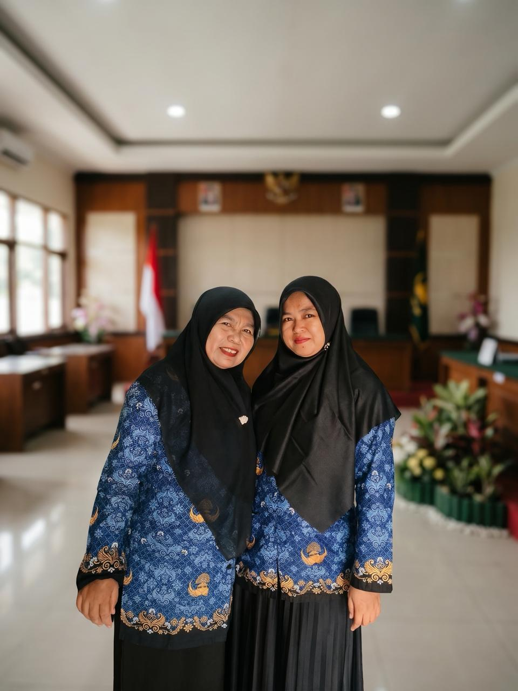
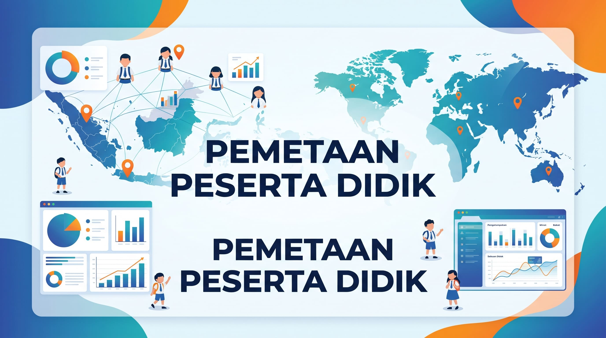
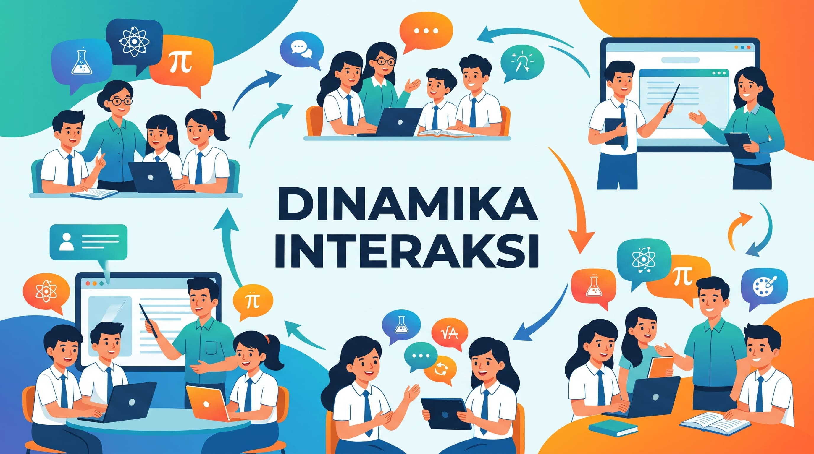

01 / 06
Kenali kemampuanmu melalui pengalaman tes yang mudah diakses. Pilih tantangan, mulai perjalanan, dan temukan hal baru tentang dirimu.
6 tests pilihan
One place to start learning

Enam pilihan tes untuk membantumu mengenali dan mengembangkan kemampuan.




Tautan tes masih berupa placeholder dan dapat diganti saat link asli sudah tersedia.
EDU TEST CENTER dirancang oleh guru dan staf SMP NEGERI 1 Sijunjung,khususnya guru bimbingan konseling.Tujuannya sendiri untuk memudahkan siswa menemukan dan mengakses berbagai tes pendidikan melalui satu halaman yang sederhana, menyenangkan, dan mudah digunakan.